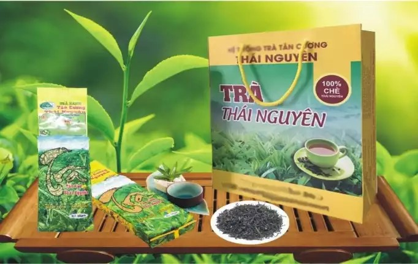
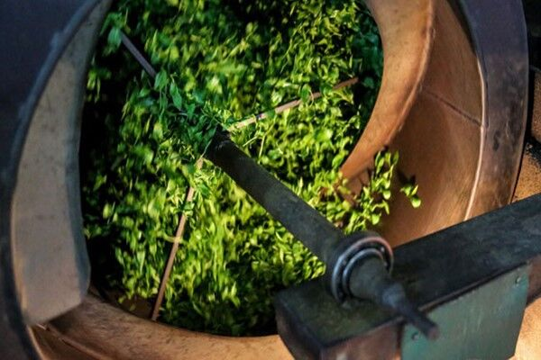
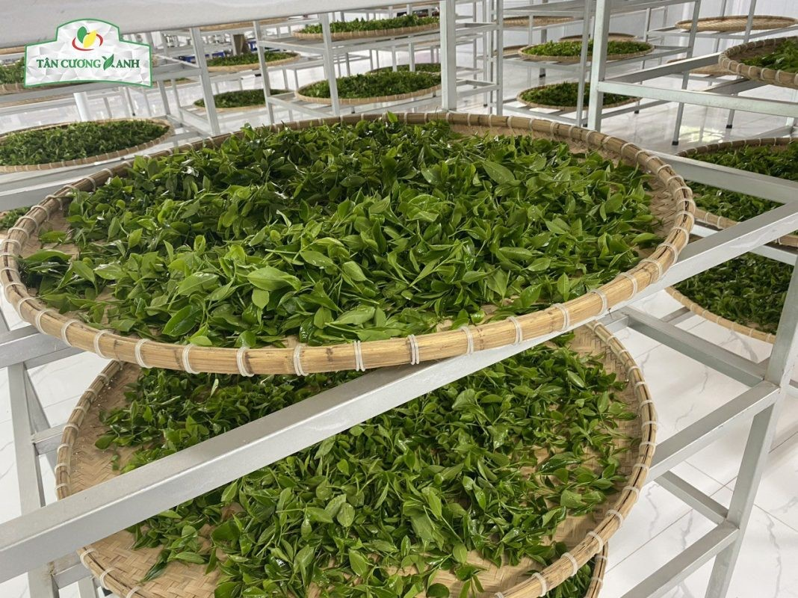
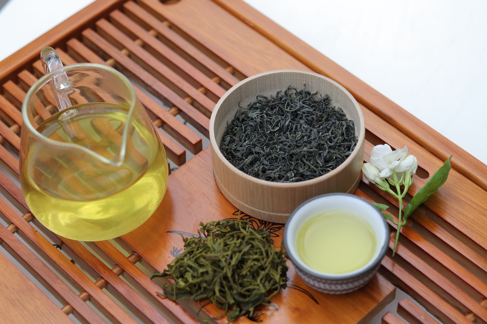

🍃 Chào mừng đến với Trang Web Chè Thái Nguyên
Chè Thái Nguyên nổi tiếng với hương thơm dịu nhẹ, vị đậm đà và hậu ngọt khó quên. Đây là một đặc sản nổi bật của vùng trung du miền núi phía Bắc Việt Nam.
✨ Đặc điểm nổi bật
- 🌱 Lá chè tươi xanh, nhỏ và dày
- 🍵 Mùi hương cốm non, nước xanh trong
- 💚 Vị đậm đà, chát nhẹ đầu lưỡi và ngọt hậu
💪 Lợi ích sức khỏe
Chè Thái Nguyên không chỉ ngon mà còn có tác dụng chống lão hóa, giảm cholesterol, tăng cường trí nhớ và hỗ trợ giảm cân hiệu quả.
🏡 Quy trình sản xuất
- Thu hái bằng tay
- Làm héo tự nhiên
- Sao chè bằng chảo gang truyền thống
- Phơi và đóng gói thủ công
📸 Hình ảnh thực tế


